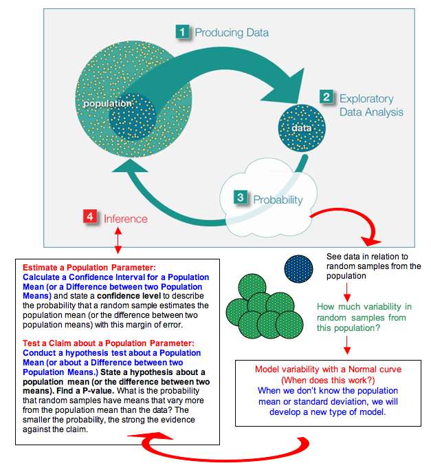
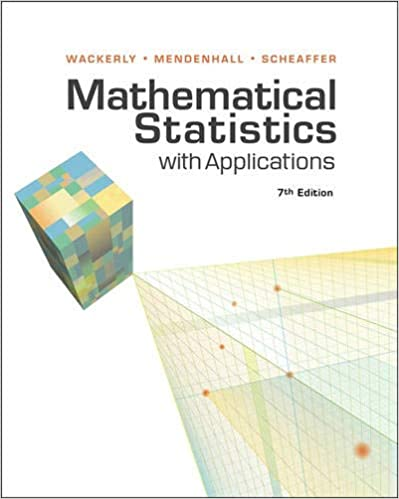

Math 6395: Homework 1 - Questions
A selection of Chapter 1 questions from "Simulation and The Monte Carlo Methods", Second Edition, by Reuven Y. Rubinstein and Dirk P. Kroese.
Jupyter Notebook
Math 6395: Homework 3 - PRN Simulation
Implemented uniform PRN sampling, normal PRN sampling and beta PRN sampling.
Jupyter Notebook
Math 6395: Homework 6 - Bridge Network
Implemented Example 9.1 from book "Handbook of Monte Carlo Methods" by Kroese et al., e.g. Kroese et al. (2013).
Jupyter Notebook
Math 6395: Homework 8 - Questions
Question 5.7 from "Simulation and The Monte Carlo Methods", Second Edition, by Reuven Y. Rubinstein and Dirk P. Kroese.
Jupyter Notebook

STAT 6312:Math Stats II - Exam 1
STAT 6312: Mathematical Statistics II - Exam 1.
Jupyter Notebook
STAT 6312:Math Stats II - Exam 1
STAT 6312: Mathematical Statistics II - Exam 1.
Jupyter Notebook

STAT 6311: Math Stats I -Exam 1
STAT 6311: Math Stats I -Exam 1
Jupyter Notebook
Future miscellaneous Projects #1
This will contain content of the future miscellaneous Projects #1.
Jupyter Notebook
Math 6395: Homework 2 - Report - Discrete Markov Chain
We explain the mathematical details behind discrete Markov chain, and we provided an simple example of discrete Markov chain.
Jupyter Notebook
Math 6395: Homework 5 - Brownian Motion stochastic process
Implemented algorithm 2.9.1 from book "Simulation and the Monte Carlo method" by Rubinstein, 3rd edition and generate 10 paths of Geometric Brownian motion. We also implemented Geometric Brownian motion algorithm from Handbook of Monte Carlo Methods by Dirk P. Kroese.
Jupyter Notebook
Math 6395: Homework 7 - Questions
Question 6.2, 6.3 and 6.12 from "Simulation and The Monte Carlo Methods", Second Edition, by Reuven Y. Rubinstein and Dirk P. Kroese.
Jupyter Notebook
STAT 6311: Math Stats I -Exam 2
STAT 6311: Math Stats I -Exam 2
Jupyter Notebook

ECO 5380: Computational Economics - Midterm 2
This is the Mid-Term 2 programming assignment from ECO 5380. In this assignment we were tasked with the examination of the Dallas city budget to determine the fiscal budget for the Dallas Police for the given year.
Jupyter Notebook
Future miscellaneous Projects #2
This will contain content of the future miscellaneous Projects #2.
Jupyter Notebook